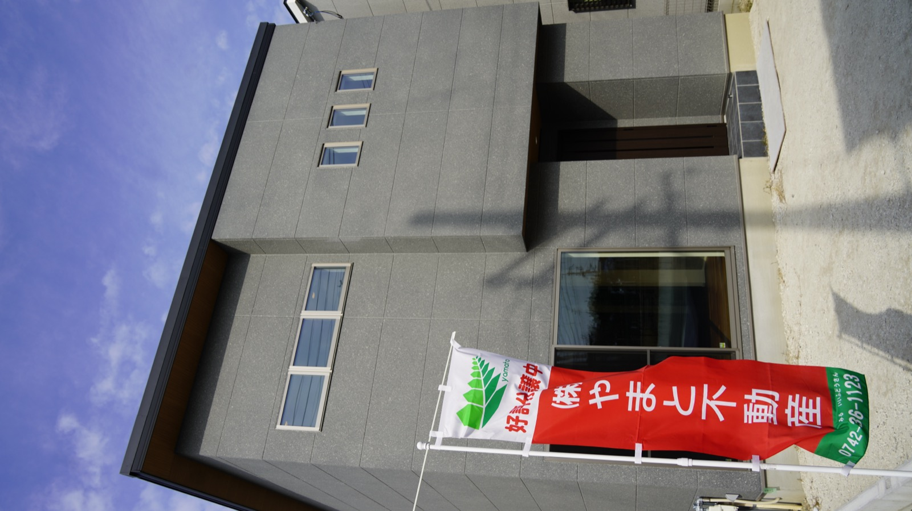
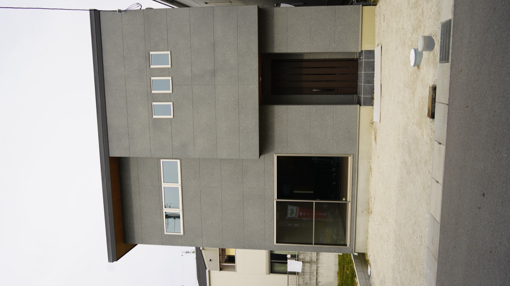

株式会社やまと不動産の新サイトを、150万円クラスにふさわしい水準で作り直します。各案は3D・スクロール連動・キネティックの最先端技法を、意味のある場所にだけ効かせています。下へスクロールすると、各案のシグネチャ技法が実際に動きます。
「これが“そのまま”、うちの土地に建つ」。驚きでも感動でもなく、疑いが消える瞬間の静かな納得を持ち帰ってもらう。
白カードを一枚も置かない“ステージ演出”系。広い余白を舞台に見立て、被写体（3Dモデル・写真・数字）を主役として据え、周囲UIは緑の1px線とラベルだけ。影はbox-shadowでなく“物が置かれている実影”で表現。説明はすべて図解と実写に逃がし、文字を最小化します。
WebGL/3Dは全7セクション中2箇所だけに封印。①価格＝施主の実プランを360°、②品質＝同じモデルをAR「自分の土地に原寸で置く」。“2Dで不可能な体験”＝実プランを全周・原寸で確かめることだけを3Dに正当化。FVは逆にモバイルLCP優先で3Dを却下し、native CSSパララックスに逃がします。本番は modelviewer.dev の model-viewer に花/風/京の実GLBを載せます（このデモはCSS3Dの代用表現）。
| セクション | レイアウトの型 | シグネチャ技法 / 出典 |
|---|---|---|
| FV（物件なし） | 全画面フルブリード・奈良情景の3層速度差レイヤー（生駒8%／建つ家20%／木立畦道40%）、文字1字なし | native CSS 3層パララックス（transformのみ・SPは2層・reduced-motionで静止） MDN scroll-driven |
| 権威 600棟 | main-dark全幅ベタ面に反転。巨大Inter数字“600”1個だけ。FVと真逆の“静寂な数字面” | @property + animation-timeline:view() カウントアップ（到達時1回） Josh W. Comeau |
| 価格の正直 | ★3D① 中央ステージにmodel-viewerで実プラン1体。周囲は余白と緑1px線。下に税込額を静置 | model-viewer 360°（reveal=interaction／poster WebPでLCP確保／reduced-motion停止） modelviewer.dev |
| 品質 | 左右分割。左＝同一モデルのARボタン「土地に原寸で置く」、右＝“8つのゼロ”円形SVG図解 | ★3D② model-viewer AR（webxr/scene-viewer/quick-look・非対応は自動フォールバック） |
| 実例・声 | 施工事例のフルブリード横スクロール写真帯＋ルームツアー動画。声は大きめ引用組み。“帯”構造でカード反復を排除 | animation-timeline:view() 全幅写真帯リビール |
| 移住 | 奈良の暮らしをカラー生活情景で。地図UI＋暮らし方タグ。SPは2層に削減した情感パララックス | native 2層パララックス（明朝/セピア/生成り罫線を一切乗せずイムラ回避） |
| 出口 | 物件・土地・LINE配信のリスト。SP追従バー2分割。装飾ゼロの実務面で締める | view()段送り＋sticky CTA（amberは予約のみ） |
「この数字は、最後まで動かない」。契約から引き渡しまで金額が上がらないことへの、身体で感じる安堵。他社の“打ち合わせるほど増える”恐怖の解毒。
3DをPart Iゲートで全却下した純DOM・エディトリアル系。主役はInter数字と秀英角ゴ銀の言葉そのもの。写真は脇役で、余白とタイポのリズムが画面を作る。緑単色の罫線グリッドにamberは金額のCTA着地でのみ点火。“数字が主人公の紙面が動く”雑誌のような体験です。
上のデモがこの案の心臓です。中央の金額は1pxも動かず、背後の見積書→着工→完成だけが差し替わる——「見せた金額のまま家が建つ」を運動そのもので証明。GSAP ScrollTriggerのpin+scrub、reduced-motion時はmatchMediaで素の縦積みに退避。Lenisや粒子は積まず、キネティックは“数字カウント”と“語のマスク送り”の2手だけに絞ります。
| セクション | レイアウトの型 | シグネチャ技法 / 出典 |
|---|---|---|
| FV（物件なし） | 全面のタイポステージ。「見せたものが、そのまま届く」1行をスクロールでマスクリビール。物件も写真も出さず言葉と余白で掴む | animation-timeline:view()/scroll() テキスト・マスクリビール Josh W. Comeau |
| 権威 600棟 | 左に固定の巨大“600”、右カラムに区画数・エリア・年数が流れる非対称グリッド。“数字が居座る”構図 | @property + view() カウントアップ＋sticky数字 |
| 価格の正直 | ★核 中央にInter税込額を完全固定、背後で見積書→着工→完成がpin区間で差し替わる。金額は1pxも動かない | GSAP ScrollTrigger pin+scrub（.priceは不動・matchMediaでreduced-motion退避） gsap.com |
| 品質 | “8つのゼロ”を縦スクロールで0が1つずつ積層するキネティック・タイポリスト。円形図解ではなく数字の列 | animation-timeline:view() stagger入場（各“0”を50ms差・CSSのみ） |
| 実例・声 | 声を主役化したマガジン見開き。大きな引用タイポ＋小さな人物実写1点。編集しないタグ引用 | view() 引用リビール（balance適用でorphan禁止） |
| 移住 | 「大阪から◯分」を大Inter数字でキネティックに提示＋地図UI。距離を数字で語り移住ハードルを下げる | native 2層パララックス＋view() 数字カウント |
| 出口 | 花2,480/風2,480/京2,280の税込価格表（tabular-nums整列）＋来場予約。ここで初めてamber点火 | view() 行送り＋SP追従バー2分割 |
「大阪の“今”より、ここでの“朝”がいい」。移住後の生活を先に体験してしまった憧れと、手描きの線が家になるまでを見届けた静かな高揚。


実写・動画・連番フレームが全面を支配する方向。文字は字幕のように最小、被写体はwarm castで統一しシネスコ横位置を多用。白カードもグリッドも封印し、フルブリード映像の連なりで物語を送る。明朝縦書き・モノクロ静謐（＝イムラ/旅館テンプレ）を避け、あえてカラーの生活情景で“動いている今”を見せます。
上のデモが核。手描き見積り線画→木材構造→完成外観を連番WebPでcanvasにscrub描画（本番48〜90枚、このデモは3状態に縮約）。“見積りがそのまま家になる”変形の連続性は静止画では出せず、ここだけscrubを正当化。モバイルはposter先出し＋先読み＋saveData/reduced-motionで静止フォールバック。最終フレームに税込額を重ね、価格不変も同時に語ります。
| セクション | レイアウトの型 | シグネチャ技法 / 出典 |
|---|---|---|
| FV（物件なし） | シネスコ全画面。奈良の朝の生活情景を3層速度差でゆっくり流す。文字は極小コピー1行を字幕位置に | native CSS 3層パララックス（カラー生活情景・SPは2層・reduced-motion静止） |
| 権威 600棟 | 施工実写タイル群が敷き詰まり“600”を面で示すモザイク。数字は写真の上に重畳。FVと対照の“集積”構図 | view() グリッドstagger出現＋@propertyカウント |
| 価格の正直 | ★核 sticky canvasで手描き見積り→木材→完成外観へ変形、最終フレームに税込額を重畳 | 連番WebPのcanvas scrub（48-90枚・poster先出し・非対応は静止） Codrops OPTIKKA |
| 品質 | 素材マクロの実写/動画をフルブリードで。塗料12貫・外壁通気・軒天木目を映像＋字幕注記で見せる | view() 全幅映像リビール＋autoplay muted loop（reduced-motion静止） |
| 実例・声 | お客さんごとのルームツアー動画をシネマ横スクロールギャラリーで。声は字幕引用 | view() 横帯リビール＋動画埋め込み（遅延ロード） |
| 移住 | 奈良の一日（朝→昼→夜）を写真連続で縦に送る短編。地図UIと他府県アクセスを字幕で添える | native 2層パララックス＋view() 連続フェード |
| 出口 | 完成外観の実写を背景に物件・土地・LINEへ。映画のエンドロールから実務へ着地させamber点火 | view() 静かな締め＋sticky CTA |
| 観点 | 01 原寸GENSUN | 02 動かない数字IMMOVABLE | 03 奈良時間NARA HOURS |
|---|---|---|---|
| 主役 | 実プランの3D立体 | 金額そのもの（数字） | 実写・動画・連番 |
| 核の技法 | model-viewer 360°＋AR | GSAP pin（金額固定・背景可変） | 連番WebP canvas scrub |
| 証明するもの | 「見た仕様が原寸で建つ」 | 「見た金額が動かない」 | 「見積りが家になる物語」 |
| 制作コスト | 中〜高（GLB/USDZを花風京で） | 低（WebGL・撮影不要） | 高（60-90枚＋動画撮影） |
| モバイル軽さ | 中（3Dは2箇所に限定） | 高（純DOM） | 中（連番の遅延ロード必須） |
| やまとの手札適合 | 実プラン3Dの新規制作が要る | 専務の芯「金額が一致」に直結 | 専務「動画資産あり＋撮る」に直結 |
| 既視感の壊し方 | “物を見せる”ステージ | “数字が動かない”運動 | “観る”シネマ |
02「動かない数字」を軸に、03「奈良時間」の映像を移住セクションへ差し込むハイブリッドが、やまとに最も効くと考えています。理由は3つ——(1) 専務の芯「パンと見せたものと値段が一致する」を、金額固定の運動が理屈より速く証明する。(2) WebGLゼロで“寝る前スマホ”に確実に軽く、スマホ最優先と完全合致。(3) GLB制作費が不要で150万予算の耐性が最も高い。
ただし「触れて確かめる立体（01）」は移住検討層のSUUMO写真不信に最も鋭く刺さる差別化なので、予算とGLB運用が確保できるなら01も強い候補です。決めるのはあなたです。
どの方向で、本設計（全セクション）に進めますか？
01 / 02 / 03、または「02＋03のハイブリッド」等の組み合わせでも指定できます。